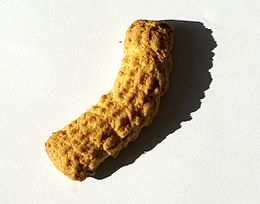

Krumiri

I krumiri o crumiri sono i biscotti tipici di Casale Monferrato, nati nel 1878. È probabilmente in ricordo di Vittorio Emanuele II, morto quell'anno, che i krumiri presero la tipica forma rassomigliante ai suoi baffi.
Ritorna sopra
Ritorna alla pagina principale